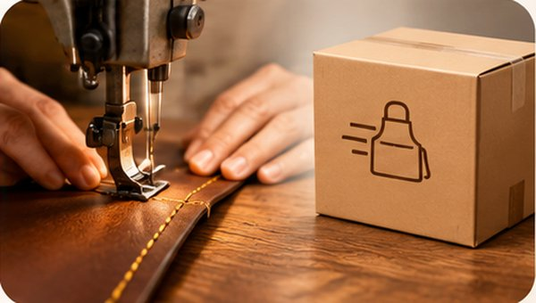
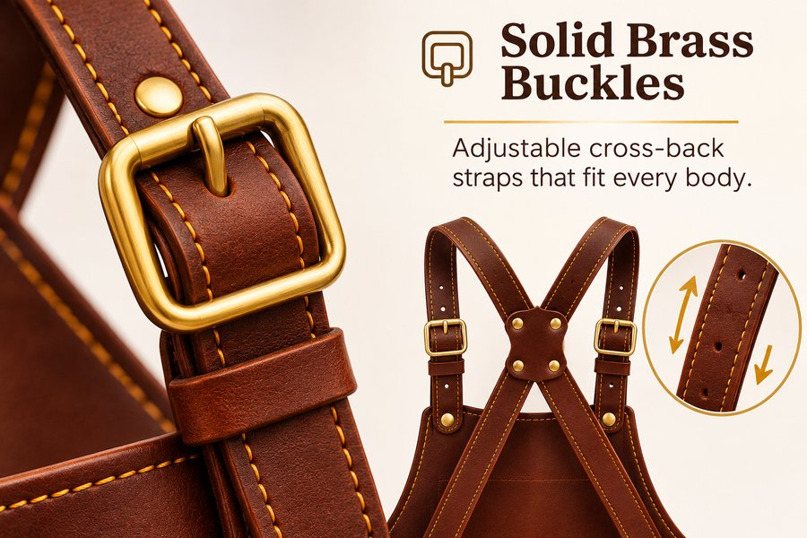
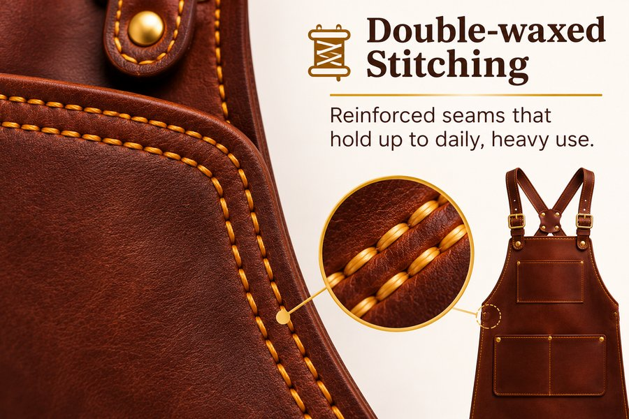
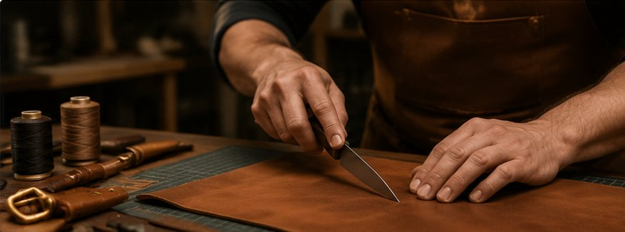

Full-grain leather aprons, made to order
Cross-back straps, solid brass hardware and waxed stitching. Add a name or logo to the chest patch for $15 and we email you a proof before we engrave it.


The aprons


How a custom order works

Choose a style
Chef, barber, workshop, artist, BBQ or the Classic. Each has pockets laid out for that kind of work.

Pick the leather
Choose a colour. Brass hardware and waxed stitching come on every apron.

Add a name or logo
Type the text or send us your logo. We email a proof and wait for your OK.

We make and ship it
Cut, stitched and engraved, then shipped to you. Free shipping over $99.
Try your name on the patch
Type a name, initials or a business name to see it on the chest patch. This is the patch we engrave.
What goes into each apron
Full-grain is the top layer of the hide, the part that hasn't been sanded or split, so it's the toughest and the one that ages well. We stitch it with waxed thread, rivet the corners where aprons usually tear, and use solid brass for the buckles and rings so nothing rusts.
How they're made



Aprons for your whole team
Restaurants, barbershops, cafés and studios order matching aprons with their logo on every one. Tell us how many you need and which styles, and we'll come back with a price per apron.
- Volume pricing on team orders
- Your logo on every apron, with a proof first
- Mix colours and styles in one order

Leather, canvas or cotton?
Cotton soaks up spills and canvas frays at the edges after a year or two of daily use. Leather wipes clean, stands up to heat and sparks better than either, and takes an engraving rather than a print that fades.
It is heavier than canvas. Cross-back straps put that weight on your shoulders instead of your neck, which is why we use them on every style.
| Leather | Canvas | Cotton | |
|---|---|---|---|
| Spills and stains | Wipes clean | Partly | Absorbs |
| Heat and sparks | Good | Fair | Poor |
| Over time | Develops a patina | Fades | Wears thin |
| Logo | Engraved | Printed | Printed |
Questions
Can't find what you need? Email sales@customleatherapron.com or use the contact form. We usually reply within a business day.
Can I put my own logo on a leather apron?
Yes. Every apron has a riveted leather chest patch, and we engrave your logo, business name, initials or a short message on it for $15. Upload your artwork on the Personalize page or send it with your order, and we'll email a proof before anything is engraved.
What kind of leather are your aprons made from?
Full-grain leather, which is the top and strongest layer of the hide. It resists spills and sparks, wipes clean, and gets a deeper colour and softer feel the more you wear it. Every apron has solid brass hardware and waxed stitching.
Will a leather apron fit me?
The straps cross at the back and adjust with brass buckles, so one size fits most adults. Because the straps sit on your shoulders rather than your neck, they're comfortable on long shifts.
Are leather aprons heavy or hot to wear?
They're heavier than canvas, but the cross-back straps spread the weight across your shoulders, so most people stop noticing it quickly. Leather also handles heat from grills, ovens and torches better than cotton or canvas.
How do I clean and care for a leather apron?
Wipe it with a damp cloth after use and let it air-dry away from direct heat. Every few months, rub in a little leather conditioner to keep it supple. Don't machine-wash or tumble-dry it.
Do you offer bulk or wholesale aprons for businesses?
Yes. Restaurants, barbershops, cafés, breweries and workshops get volume pricing, their logo on every apron, and a proof before production. You can mix colours and styles in one order. Ask for a quote on the contact page.
Do leather aprons make good gifts?
They make a good gift for a cook, barber, woodworker, artist or anyone who grills. Add their name or initials to the chest patch and it becomes something they'll use for years.
How much does shipping cost?
Shipping is free on orders over $99, and we ship worldwide. Delivery time depends on where you are and whether the apron is personalized, so contact us for an estimate before you order.